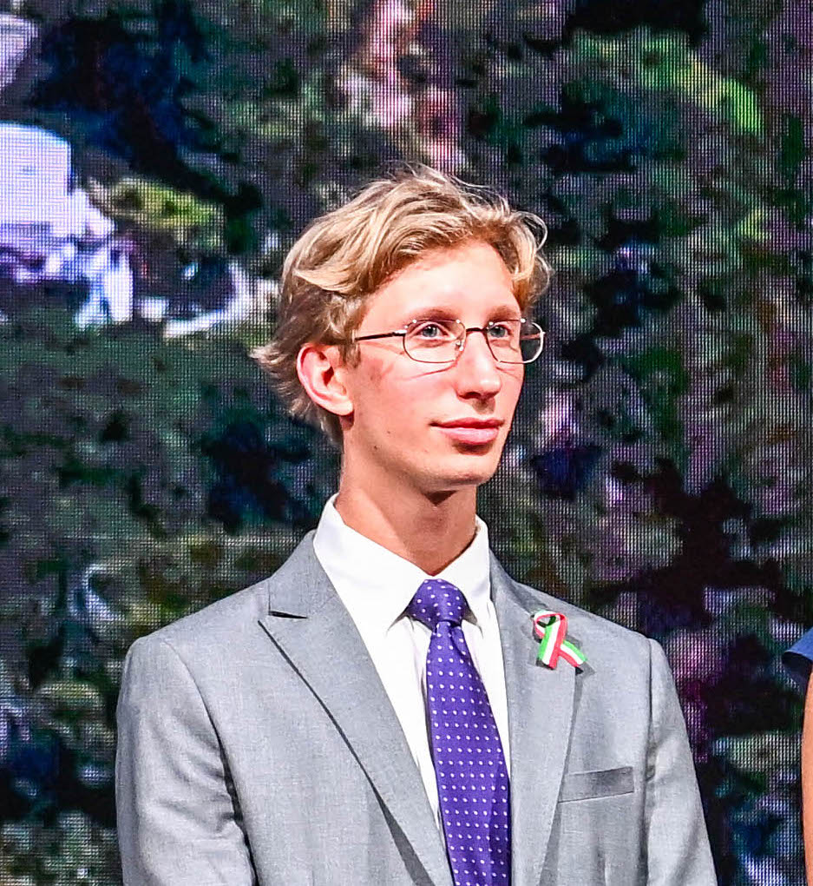
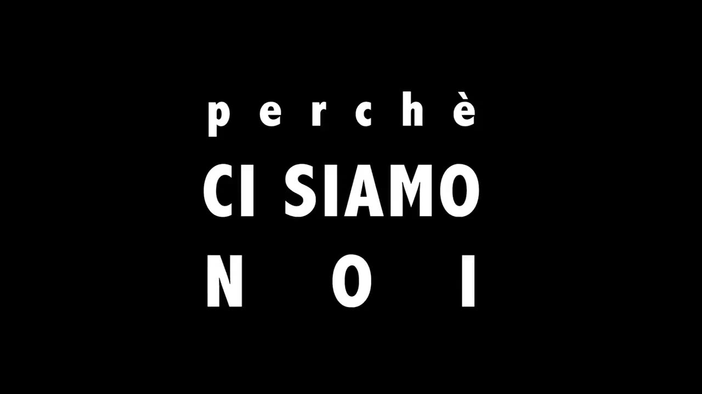

Luca Kosowski
Digital marketing services · legal review · diplomatic coordination
Multilingual professional based in Kuala Lumpur, currently providing Digital and Marketing Services for Bizwholistic Ltd. while working across Italian legal review, trust and safety operations, diplomatic project coordination, stakeholder liaison, and public-facing digital content.
Experience
Current and selected roles: Digital and Marketing Services for Bizwholistic Ltd., Italian legal and operations work at Concentrix, diplomatic project coordination with the Italian Embassy in Kuala Lumpur, and earlier energy-transition and journalism work.
Digital and Marketing Services
- Provide contract digital and marketing services for Bizwholistic Ltd.
- Support public-facing digital content and website-related materials within the agreed contract scope.
Italian Legal Advisor | Operations Administrator
- Engage in dialogue with governments, law firms, and corporations regarding Italian trust and safety governance for a top global video streaming platform.
- Coordinate with government liaison teams to ensure policy alignment, compliance, and timely escalation of critical issues.
- Review and assess legal documents on a daily basis.
- Conduct and evaluate candidate interviews for recruitment.
- Train and mentor new recruits.
- Provide assistance to colleagues and collaborate with Spanish advisors.
- Translate legal documents and internal communications.
- Handle and evaluate legal issues including defamation, trademark, counterfeit, and circumvention of technological measures.
- Ensure quality through internal audits with legal colleagues.
- Manage sensitive cases with strict adherence to privacy, security, and governmental requirements.
- Ensure compliance with applicable laws and platform policies.
External Consultant
- Served as Project Manager and Executive for the Italian National Day in Kuala Lumpur.
- Acted as Liaison between the Embassy, sponsors, event agencies, Mandarin Oriental, and security officers.
- Instructed Embassy employees on duties and operational tasks.
- Planned the strategic seating and location of sponsors, ambassadors, diplomatic staff, and local political entities.
- Managed diplomatic settings and protocol requirements.
- Conducted analysis and research on a wide range of topics for diplomatic meetings between His Excellency the Ambassador and local/international political entities.
- Supported the writing and creation of the Embassy book "Italy in Malaysia".
External Consultant
- Personally assisted His Excellency Massimo Rustico in organising, managing, and preparing diplomatic meetings.
- Planned and organised event structures and logistics.
- Collaborated on and managed events promoting Italian culture.
- Produced ad hoc video editing and design content.
- Created the visual content for the Italian National Anthem.
Intern
- Collaborated with the Commercial and Cultural office on daily operations.
- Provided support to the Deputy Head of Mission and Ambassador during peak periods.
- Drafted messages for the Ministry of Foreign Affairs in Rome.
- Translated articles, conducted research, and handled video/photo editing.
- Created PowerPoint presentations and managed social media campaigns.
- Served as official notetaker at formal breakfasts with Italian and Malaysian Deputy Ministers.
Brand Ambassador
- Wrote technical articles on energy transition and blockchain technology.
- Translated articles and documentation between English, Spanish, and Italian.
- Moderated online forums and community channels.
Freelance Journalist
- Reported on the Conference of the Parties (COP24).
- Wrote articles addressing political, environmental, and social issues.
Education
Master's Degree in African Studies
Master's Degree in International Relations and Development Cooperation
Bachelor's Degree in International Studies
Skills
Diplomacy & Policy
- Government Liaison
- Protocol Management
- Political Analysis
- Stakeholder Engagement
Digital, Web & Trust
- Trust & Safety
- Content Moderation Policy
- Static HTML/CSS websites
- Astro static sites
- Basic SEO metadata
- Prompt engineering
- Blockchain Fundamentals
Communication & Management
- Project Management
- Event Management
- Cross-Cultural Communication
- Copywriting & Storytelling
- Team Leadership
Languages
- Italian - Native
- Polish - Native
- English - Fluent
- Spanish - Proficient
- German - Intermediate
Projects
Italian National Day 2025
Project management and execution of the Italian National Day celebrations in Kuala Lumpur.
View Project
Perché ci siamo noi
A short documentary on the perceptions of urban decay and nightlife decrease in Trento.
View ProjectWebsite Development Showcase
A standalone gallery of static website package demos and verified site-building context.
View Website ShowcaseArticles
Betting on the Climate: Sacrifice or Opportunity?
During COP24, we interviewed Simona Fabiani (CGIL) on the intersection of climate policies and labor rights.
Read MoreHow a Student Is Inspiring the World
It is not common to find a teenage activist fighting climate change. We met Greta Thunberg at COP24 before she became a global icon.
Read MoreContact information
For collaborations or inquiries, please use the contact information below or send me a message.